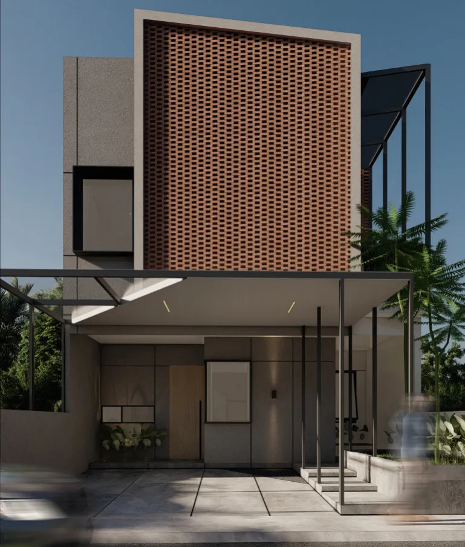
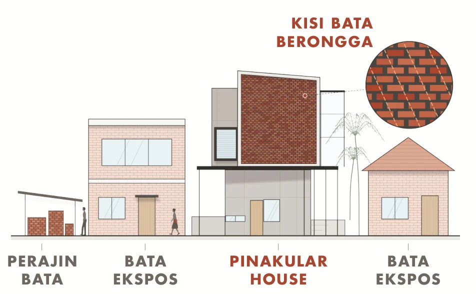
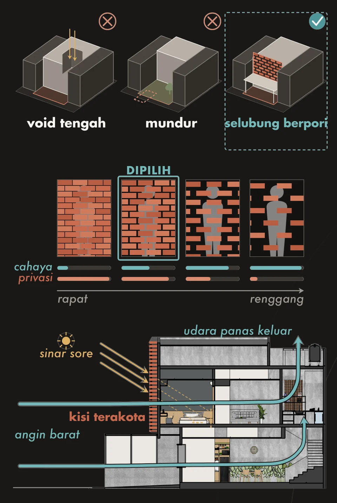
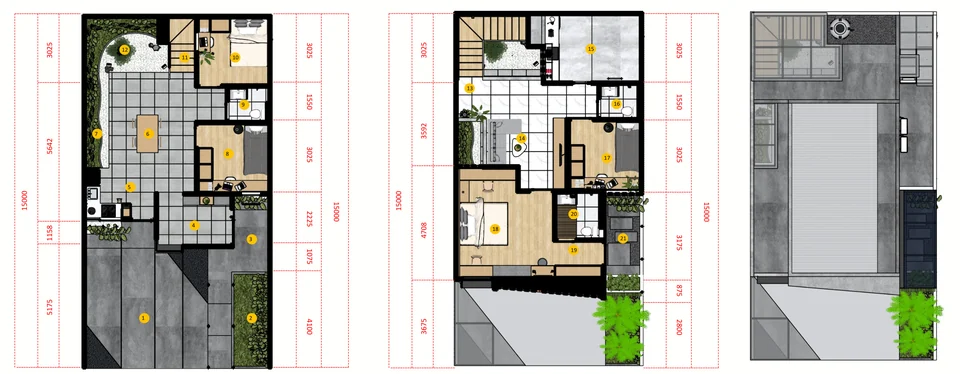
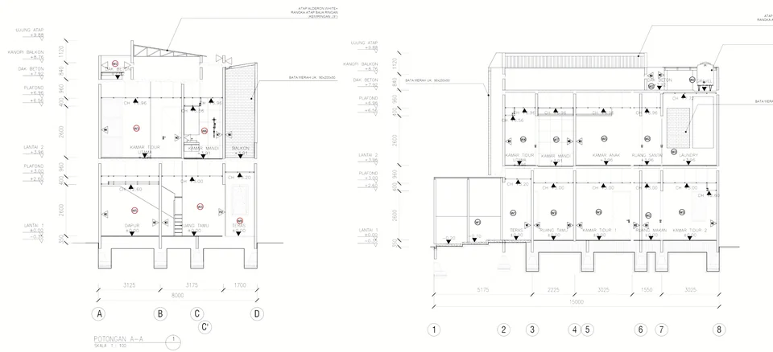
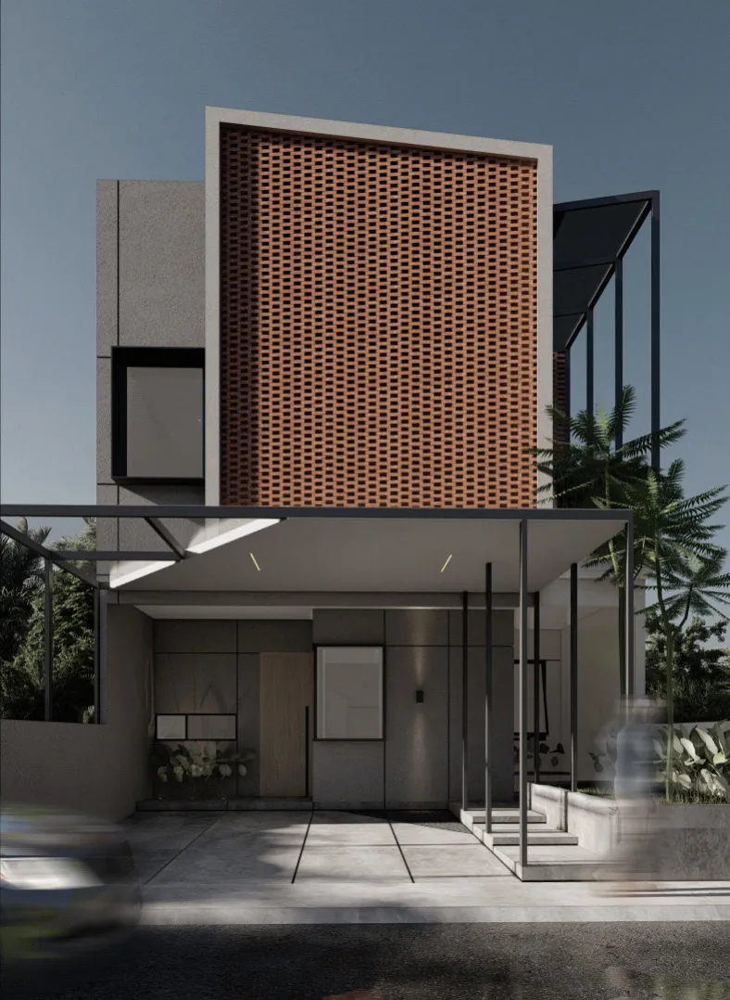
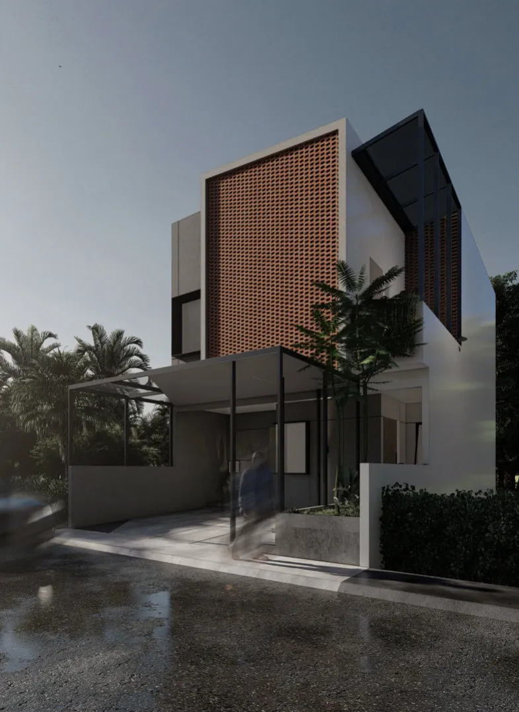
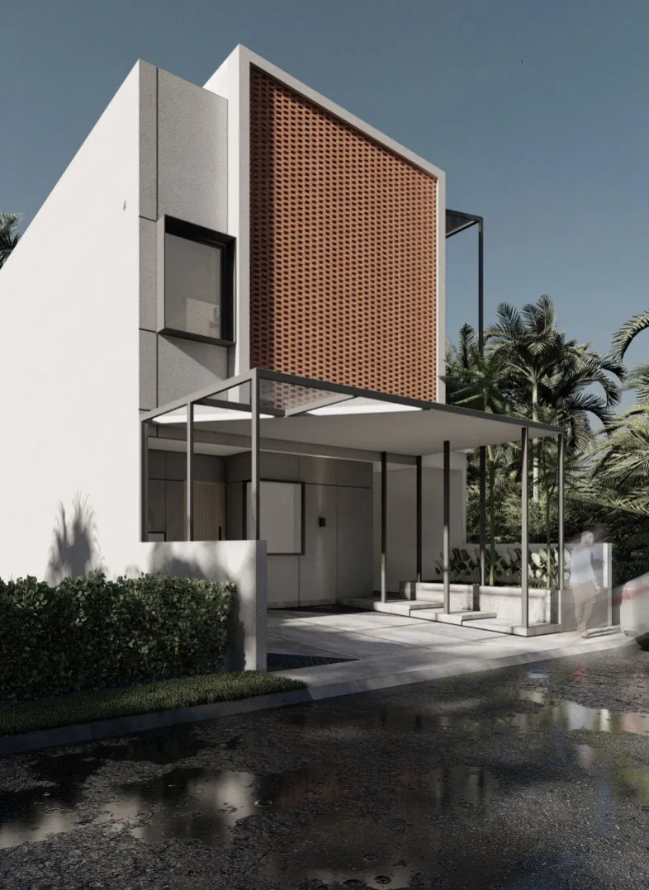
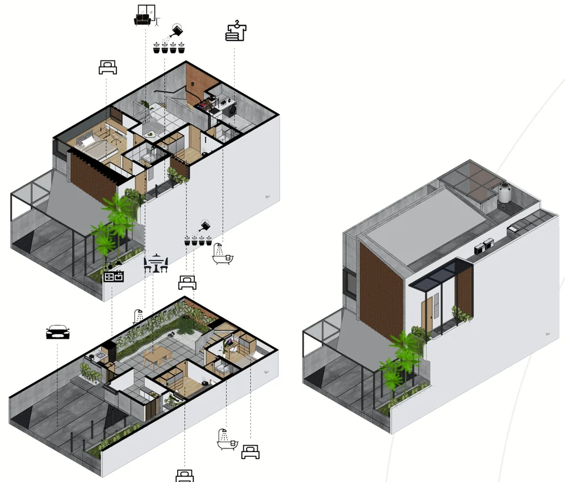
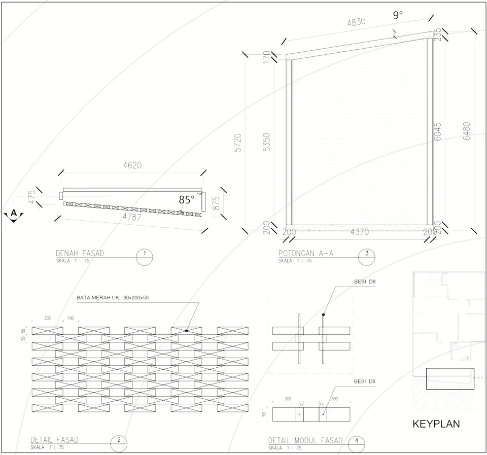

![]([{"src":"../../assets/img/paragon/gerbang-organik-1600.webp","srcset":"../../assets/img/paragon/gerbang-organik-480.webp 480w, ../../assets/img/paragon/gerbang-organik-960.webp 960w, ../../assets/img/paragon/gerbang-organik-1600.webp 1600w, ../../assets/img/paragon/gerbang-organik-2400.webp 2400w","label":"Paragon. Gerbang organik menuju area pajang","href":"../../karya/paragon/"},{"src":"../../assets/img/taman-medyra/gerbang-1600.webp","srcset":"../../assets/img/taman-medyra/gerbang-480.webp 480w, ../../assets/img/taman-medyra/gerbang-960.webp 960w, ../../assets/img/taman-medyra/gerbang-1600.webp 1600w, ../../assets/img/taman-medyra/gerbang-2400.webp 2400w","label":"Taman Medyra. Satu-satunya gerbang ada di sisi timur. Render tahap awal","href":"../../karya/taman-medyra/"},{"src":"../../assets/img/paragon/area-pandang-1600.webp","srcset":"../../assets/img/paragon/area-pandang-480.webp 480w, ../../assets/img/paragon/area-pandang-960.webp 960w, ../../assets/img/paragon/area-pandang-1600.webp 1600w, ../../assets/img/paragon/area-pandang-2400.webp 2400w","label":"Paragon. Area pandang, koridor yang menghadap lantai produksi","href":"../../karya/paragon/"},{"src":"../../assets/img/hong-hua-interior/selasar-1600.webp","srcset":"../../assets/img/hong-hua-interior/selasar-480.webp 480w, ../../assets/img/hong-hua-interior/selasar-960.webp 960w, ../../assets/img/hong-hua-interior/selasar-1600.webp 1600w, ../../assets/img/hong-hua-interior/selasar-1921.webp 1921w","label":"Hong Hua Mandarin: Interior. Selasar lantai 2","href":"../../karya/hong-hua-interior/"}])
01 / 08 · Hunian
Pinakular House


Satu kisi bata terakota untuk privasi dan panas sore.
Konsep
Vernakular→ Pinakular
Pinakular diambil dari kata vernakular, arsitektur yang lahir dari material dan keterampilan setempat. Di sekitar tapak banyak perajin bata merah dan rumah berbata ekspos, maka rumah ini memakai bahasa material yang sama, bata yang disusun berongga.
- Kisi terakota
- Selubung berpori
- Panas sore
- Tersaring di depan
- Privasi
- Tak terbaca dari jalan


Analisis tapak
Tertutup di tiga sisi, rumah hanya bisa bernapas lewat muka depan dan atap.
- Tetangga
- Rapat di tiga sisi
- Muka depan
- Lebar 8 m, satu-satunya sisi terbuka
- Matahari sore dan angin barat
- Datang dari arah depan
- Jalan
- Sumber tatapan dan bising

Proses desain
Satu elemen untuk privasi dan panas: kisi bata terakota.
- Tiga skema
- Void tengah dan mundur ditolak, selubung berpori dipilih.
- Mengatur kerapatan
- Cukup terang di dalam, sosok penghuni tak terbaca dari jalan.
- Hasil
- Sinar sore tertahan, angin dan udara panas tetap mengalir.


Gambar




Visual









